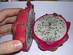
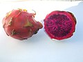
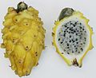

火龍果又稱紅龍果、龍珠果、仙人掌果或量天尺果，是多種仙人掌科蛇鞭柱屬的植物果實的總稱（過去分類為量天尺屬）。水果呈橢圓形，直徑10－12cm，表皮多為紅色或黃色，覆有頂端綠色、整體呈圓角三角形的葉狀體（常稱為「鱗片」），果肉常為灰白色、紫紅色，種子黑色。
名稱由來
火龍果在英語中通常被稱為「Dragon Fruit」（可直譯為「龍果」），此英文名自1960年代以來開始使用，可能因火龍果的果皮似皮革以及其外部突出的尖鱗片而得名。除此外之外，更靠近該類植物原產地的拉丁美洲國家對其使用的俗名也通用於英語交流中，「Pitahaya」或「Pitaya」來自墨西哥，「Pitaya Roja」則來自中美洲和南美洲北部。
地理位置
蛇鞭柱屬的火龍果種質發源於墨西哥南部和中美洲的古巴、尼加拉瓜、哥倫比亞等地，隨著英國、法國、荷蘭等歐洲國家的殖民活動，火龍果逐漸傳入越南、泰國等東南亞地區。
品種種類
不同物種或品種的火龍果依據大體的果皮、果肉顏色，可分為以下幾個大類：
紅皮白肉類
紅皮紅肉類
黃綠皮類
橙皮品種
參考來源:
維基百科-火龍果